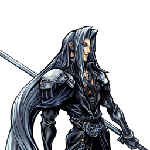
Final Fantasy VII
Sephiroth
Combattant aérien défensif : zoning au Shadow Flare et punitions chirurgicales
Position dans la méta
Tier A 8ᵉ sur 30 — tier list tournoi 2017 de dissidia.wiki (moitié valeurs de matchups, moitié avis de joueurs experts).
Sephiroth est 8e du classement 2017, en tier A. L'overview confirme un classement élevé constant en compétitif, porté par sa fiabilité à tous les niveaux de jeu.
Vue d'ensemble
Sephiroth est un combattant aérien défensif capable de se battre de près comme de loin. Sa stratégie principale repose sur le zoning au Shadow Flare, avec pour objectif de forcer les erreurs : le dodge cancel lui permet d'enchaîner les Shadow Flares rapidement, ce qui gêne les déplacements adverses, pousse l'opposant à approcher et ouvre la voie au reste de son arsenal.
Sephiroth est polyvalent : il synergise bien avec les mécaniques du jeu et prospère quand l'adversaire doit venir à lui. Shadow Flare met la pression aussi bien sur les combattants de mêlée que sur les lanceurs de sorts, tout en remplissant la jauge assist à un rythme régulier. Sudden Cruelty complète les projectiles au corps à corps avec sa hitbox disjointe et son fort potentiel de dégâts et d'EX. Ses combos sont solides grâce à sa synergie d'assist (Kuja et Aerith), et ses options défensives après esquive aérienne sont redoutables : Heaven's Light et Hell's Gate sont des HP attacks verticales et évasives, Scintilla bloque instantanément dès la frame 1 (staggers sur les dashes et les attaques de mêlée basse priorité), et Heaven's Light garantit même des dégâts HP après une échappée en LV2 Assist Change.
Il n'est pas sans faiblesses : les builds Bravery Boost on Dodge découragent l'abus de Shadow Flare, beaucoup de ses attaques sont télégraphiées (HP attacks, Oblivion) ou linéaires (Godspeed, Sudden Cruelty), ses braveries au startup rapide se paient par une recovery moyenne plus longue, et sa mobilité est inférieure à la moyenne. Même après une esquive, choisir la bonne option défensive reste un pari, et il doit surveiller le tracking vertical, Precision Evasion et les command blocks adverses pour ne pas se surexposer.
En compétitif, Sephiroth est classé de façon constante en haut de la hiérarchie. Son plancher d'exécution bas et son combat aérien fiable en font un excellent personnage pour débutants comme joueurs confirmés, particulièrement difficile à battre aux niveaux faible et intermédiaire. Son style très porté sur l'action l'aide plus qu'il ne le dessert, à condition de ne pas devenir esclave de ses propres habitudes.
Forces
- Zoning : Shadow Flare met l'adversaire sous pression et dicte le rythme du match.
- Combat aérien : Sephiroth se bat confortablement sans dépendre du sol.
- Dégâts élevés : grosse stat d'attaque, dégâts de base importants et Wall Rush HP — un seul combo d'assist peut déchiqueter la bravery adverse.
- Génération de jauges EX et assist fiable.
- Builds offrant une grande marge d'optimisation et d'ajustement.
- Défense post-esquive flexible : trois HP aériens fournissant évasion ou garde instantanée.
- EX Mode qui amplifie ses dégâts et débloque Heartless Angel (bravery adverse réduite à 1) ; personnage simple et fiable à tous les niveaux.
Faiblesses
- Anti-zoning : Bravery Boost on Dodge et les contres à longue portée (Shield Bash de Firion, suivis de block d'Exdeath) limitent l'efficacité de son zoning.
- Linéarité : beaucoup d'attaques télégraphiées ou au tracking moyen à médiocre.
- Pas de poke aérien rapide : aucun coup ne cumule startup rapide et dodge cancel précoce — la seule exception, Transience, n'existe qu'au sol.
- Mobilité globalement inférieure à la moyenne, qui pousse à agir plutôt qu'à se déplacer sans engagement.
Stats & vitesses
| Nom | Sephiroth (セフィロス) |
|---|---|
| Jeu d'origine | Final Fantasy VII |
| ATK de base (LV100) | 111 (High) |
| DEF de base (LV100) | 111 (Average) |
| Vitesse de course | 9 (Slow) |
| Vitesse de dash | 81 (Below Average) |
| Vitesse de chute | 85 (Average) |
| Chute après esquive | 41 (Below Average) |
| BRV la plus rapide | 15F (Transience) |
| HP la plus rapide | 43F (Octaslash, Heaven's Light) |
| HP en 1 coup | Yes (Multiple) |
| HP links | Yes (Combos only) |
| Command block | Yes (Scintilla) |
| Armes | Greatswords, Katanas |
| Armures | Chestplates, Gauntlets, Heavy Armor,Helms, Light Armor, Shields |
| Armes exclusives | Masamune Blade, Masamune, One-Winged Angel |
| Camp | Chaos |
| Doubleur (JP) | Toshiyuki Morikawa |
| Doubleur (ENG) | George Newbern |
Point or : ce personnage · petits points : le reste du cast · trait violet : moyenne. Valeurs du wiki, plus bas = plus rapide ; le rang à droite se lit directement (1ᵉʳ = le plus rapide).
Coups
Barre plus courte = coup plus rapide. Startup en frames (60 i/s, données dissidia.wiki), priorité indiquée après la valeur. Les coups marqués ★ sont les plus rapides du kit — ce sont en général vos meilleurs outils de punish et de pression.
Braveries
Au sol
Reaper Melee Low
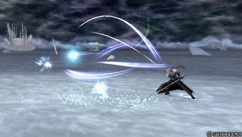
Combo au sol en trois parties, le punish terrestre à gros dégâts de Sephiroth (21F). Retarder chaque pression de cercle après la fin d'une rafale maximise le nombre de coups, donc les dégâts ; stoppé à la deuxième partie, Reaper lance des combos d'assist, et les murs réduisent le knockback du finisher pour convertir aussi. Il faut le dodge cancel pour le sécuriser au whiff, et le jeu très aérien de Sephiroth limite ses occasions de l'utiliser.
| Dégâts de base | 45 (2, 1 x 5, 10 > 2, 1 x 6, 10 > 3, 1 x 5, 2) |
|---|---|
| Startup | 21F |
| Type | Physical |
| Priorité | Melee Low |
| EX Force | 93 |
| Effets | Chase |
| Cancels | Dodge |
| CP (maîtrisé) | 30 (15) |
Fervent Blow Melee Low, Ranged Low
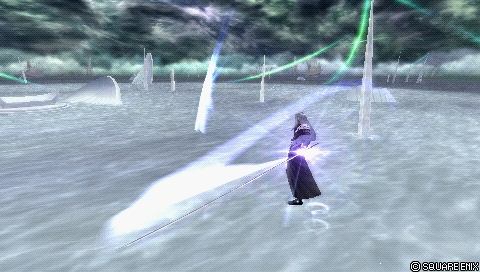
Flot linéaire de projectiles au sol, utilisable avec parcimonie en whiff punish de mi-distance : sa durée active couvre les attaques à trous comme les Raging Fists de Prishe, et il lance des combos d'assist sur projectile ou après Wall Rush. Longue recovery, priorité Ranged Low, aucun tracking : vulnérable aux déplacements latéraux, au Ground Dash et au Free Air Dash. Le coup d'épée rapproché en priorité mêlée a tendance à cross-up sur un block très proche, un mixup potentiel contre la garde — mais Godspeed, son équivalent aérien, sert davantage.
| Dégâts de base | 35 (5, 4 x 5 > 1 x 3, 7) |
|---|---|
| Startup | 27F |
| Type | Physical |
| Priorité | Melee Low, Ranged Low |
| EX Force | 30 |
| Effets | Wall Rush |
| Cancels | Dodge |
| CP (maîtrisé) | 30 (15) |
Shadow Flare (ground) Ranged Low
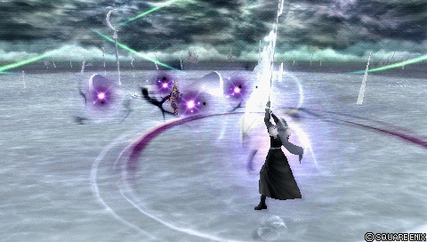
Partage l'essentiel de ses propriétés avec la version aérienne (dont la fenêtre de cancel précoce), mais laisse Sephiroth au sol : impossible de le répéter à l'infini pour harceler et remplir la jauge assist. Sa niche : les builds à booster Pre-Jump (x1,5), que Sephiroth conserve en restant au sol. Détail utile : un Shadow Flare au sol peut se cancel en Shadow Flare aérien, alors que l'inverse est impossible.
| Dégâts de base | each (3) |
|---|---|
| Startup | 45F |
| Type | Magical |
| Priorité | Ranged Low |
| EX Force | 0 |
| Cancels | Dodge, Block, Attack |
| CP (maîtrisé) | 30 (15) |
Transience Melee Low
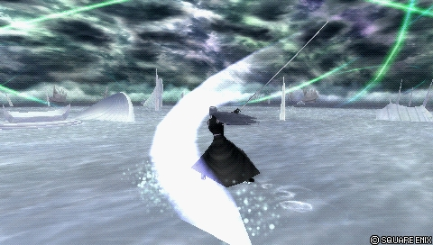
Poke rapproché au sol avec tous les attributs du poke efficace : startup de 15F (le plus rapide de Sephiroth), dégâts corrects et recovery courte annulable — idéal en théorie pour l'offense, la défense et le remplissage sûr de la jauge assist. En pratique, le jeu aérien de Sephiroth le rend souvent indisponible et sa récompense à l'impact est faible, même si un Wall Rush se convertit en combo d'assist. Au sol, le whiffer en boucle accélère le gain de jauge assist.
| Dégâts de base | 20 (1 x 7, 13) |
|---|---|
| Startup | 15F |
| Type | Physical (1st hit) Magical (other hits) |
| Priorité | Melee Low |
| EX Force | 30 |
| Effets | Wall Rush |
| Cancels | Dodge (hit / whiff) Block & Attack (whiff only) |
| CP (maîtrisé) | 30 (15) |
En l’air
Sudden Cruelty Melee Low
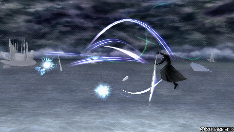
Combo aérien en deux parties et punish aérien majeur de Sephiroth (17F, imparable à la réaction) : son poke offensif de référence au corps à corps, avec hitbox disjointe atteignant vite sa portée maximale. Excellent pour démarrer et gonfler les combos d'assist, il convertit de façon fiable une touche de Shadow Flare de près et peut même percer des projectiles haute priorité bien positionné. Faiblesse : quasi aucun mouvement vers l'adversaire — il attrape mal les déplacements évasifs, Ground Dash en tête.
| Dégâts de base | 40 (2 x 8, 9, 4, 1 x 5, 6) |
|---|---|
| Startup | 17F |
| Type | Physical |
| Priorité | Melee Low |
| EX Force | 87 |
| Effets | Chase |
| Cancels | Dodge |
| CP (maîtrisé) | 30 (15) |
Godspeed Melee Low, Ranged Low
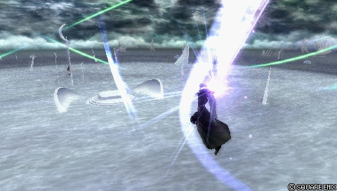
Version aérienne du flot de projectiles linéaire : whiff punish de mi-distance grâce à sa startup et ses frames actives, capable de contester les coups à trous (feintes de Tifa) à distance, avec Wall Rush au sol pour lancer un combo d'assist. Aucun tracking horizontal ou vertical : les projectiles filent droit, ce qui expose aux assist punishes. En concurrence avec Oblivion pour le troisième slot de bravery : Godspeed a plus d'allonge latérale et de dégâts, Oblivion une meilleure couverture verticale ; sur touche à distance contre un adversaire au sol, un dodge cancel en Sudden Cruelty peut combotter sur le landing lag.
| Dégâts de base | 35 (5, 4 x 5, 1, 2, 7) |
|---|---|
| Startup | 23F |
| Type | Physical |
| Priorité | Melee Low, Ranged Low |
| EX Force | 33 |
| Effets | Wall Rush |
| Cancels | Dodge |
| CP (maîtrisé) | 30 (15) |
Oblivion Melee Low
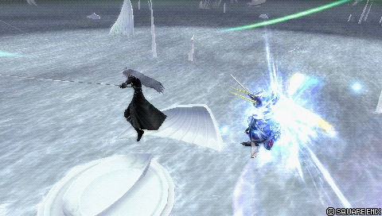
Sephiroth traverse l'adversaire puis inflige une série de coups avec Wall Rush vers le bas, bon pour les combos d'assist au sol. C'est sa bravery de mêlée à la plus longue portée verticale (il se rapproche pendant la startup) : parfaite pour punir les adversaires imprudents au-dessus ou en dessous et les assists mal placés, mais réactable sinon. Après une touche de Shadow Flare, Oblivion assure le suivi plus facilement que les autres braveries ; sans lock-on et assigné à cercle, il sert de déplacement dans n'importe quelle direction pour remplir la jauge assist plus sûrement.
| Dégâts de base | 25 (6, 1 x 9, 10) |
|---|---|
| Startup | 27F |
| Type | Physical |
| Priorité | Melee Low |
| EX Force | 30 |
| Effets | Wall Rush |
| Cancels | Dodge |
| CP (maîtrisé) | 30 (15) |
Shadow Flare (midair) Ranged Low
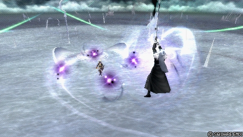
Le projectile qui définit Sephiroth : quatre orbes à longue portée qui encerclent l'adversaire avant de converger. Portée généreuse, cancel rapide vers d'autres actions, départs de combos : c'est le cœur de son zoning, il force l'approche adverse, harcèle les personnages à setup comme Kefka et Ultimecia et remplit vite la jauge assist. Faiblesses réelles : Ranged Low (traversable au dash), tracking qui cesse dès l'activation, aucune protection du corps de Sephiroth, télégraphié (vulnérable à Shield Bash de Firion, Omni Block d'Exdeath) et contre-productif face aux builds Bravery Boost on Dodge.
| Dégâts de base | each (3) |
|---|---|
| Startup | 45F |
| Type | Magical |
| Priorité | Ranged Low |
| EX Force | 0 |
| Cancels | Dodge, Block, Attack |
| CP (maîtrisé) | 30 (15) |
Attaques HP
Au sol
Black Materia Ranged High
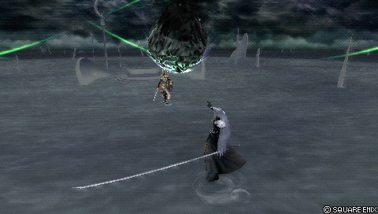
Projectile chargeable en trois niveaux : seul le niveau 3, qui tombe à la verticale sur l'adversaire, inflige des dégâts de bravery et Wall Rush, et Sephiroth peut se déplacer pendant sa chute. Peu utilisé en compétitif : startup très lente, immobilité totale, aucune protection — l'angle des météores laisse Sephiroth ouvert aux dashes et interruptions de près comme de loin. Facile à éviter ou interrompre, il n'apporte rien de notable au neutral d'un personnage aussi aérien.
| Level 1 | Level 2 | Level 3 | |
|---|---|---|---|
| Dégâts de base | - | - | 3 x N |
| Startup | 63F | 90F (Min. charge) 101F (Release) | 178F (Min. charge) 201F (Release) |
| Type | - | - | Magical |
| Priorité | Ranged High | Ranged High | Ranged High |
| EX Force | 0 | 0 | 6 |
| Effets | - | - | Wall Rush, Absorb |
| Cancels | Dodge | Dodge | Dodge |
| CP (maîtrisé) | 30 (15) |
Octaslash (ground) Melee High
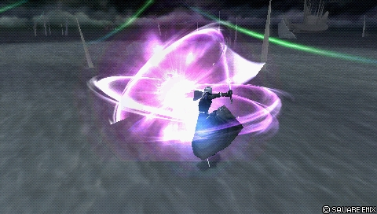
Combo multi-coups avançant (43F), outil de callout contre les whiffs et esquives au sol : bonne couverture horizontale, beaucoup de tracking latéral, et une occupation de l'espace efficace dans les endroits clos (coins, stages comme Pandaemonium). Tracking vertical faible et animation complète même au whiff : risqué en neutral. C'est le HP de Sephiroth qui inflige le plus de dégâts de bravery, avec départ de combo d'assist sur Wall Rush ; Sephiroth est considéré en l'air à la fin du coup.
| Dégâts de base | 2 x 6, 4 (16) |
|---|---|
| Startup | 43F |
| Type | Physical |
| Priorité | Melee High |
| EX Force | 21 |
| Effets | Wall Rush |
| Cancels | Dodge |
| CP (maîtrisé) | 30 (15) |
Scintilla (ground) Block Mid, Melee High
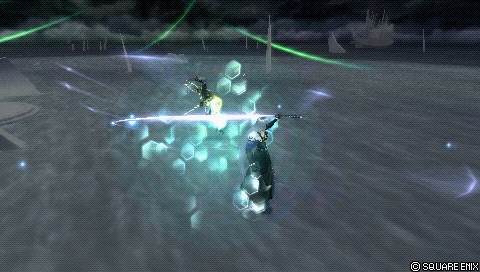
Command block qui garde instantanément puis contre-attaque : puissant en défense, mais très risqué si le stagger ne vient pas. Il bloque les attaques basse priorité et les dashes (un block d'attaque mid priority stagger Sephiroth), s'utilise idéalement après une esquive au sol, et son Wall Rush ouvre un combo d'assist. La version aérienne est plus utilisée en compétitif.
| Dégâts de base | 4, 1 x 6 (10) |
|---|---|
| Startup | 45F, 1F-42F (block) |
| Type | Physical |
| Priorité | Block Mid, Melee High |
| EX Force | 30 |
| Effets | Wall Rush, Block |
| Cancels | Dodge |
| CP (maîtrisé) | 30 (15) |
En l’air
Hell's Gate Melee High
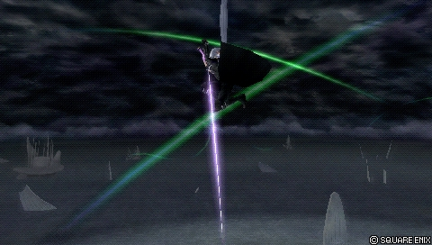
Plongeon flexible (55F) pour menacer le sol, se défendre après une esquive aérienne ou conclure un combo d'assist. Carré maintenu : piqué multi-coups qui entraîne l'adversaire vers le bas, avec éclatement du sol à hitbox HP à l'atterrissage ; relâché : transition en HP à un coup. L'ascension au startup offre une part d'évasion et Sephiroth se dirige manuellement pendant toute l'attaque ; toute version se convertit en combo d'assist, extensible avec Aerith. Maintenu, il devient même un combo infini dans Phantom Train en poussant l'adversaire vers une fenêtre.
| Dégâts de base | 2 x N |
|---|---|
| Startup | 55F |
| Type | Physical |
| Priorité | Melee High |
| EX Force | 60 + 3 x N |
| Cancels | Dodge |
| CP (maîtrisé) | 30 (15) |
Octaslash (midair) Melee High
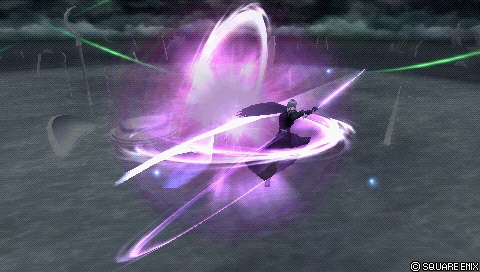
Fonctionne comme la version au sol : tracking latéral, multi-coups. Moins prisé en l'air car les autres HP aériens de Sephiroth offrent plus d'utilité en combo et en neutral, mais reste l'un de ses finishers de combo d'assist les plus puissants en dégâts de bravery.
| Dégâts de base | 2 x 6, 4 (16) |
|---|---|
| Startup | 43F |
| Type | Physical |
| Priorité | Melee High |
| EX Force | 21 |
| Effets | Wall Rush |
| Cancels | Dodge |
| CP (maîtrisé) | 30 (15) |
Scintilla (midair) Block Mid, Melee High
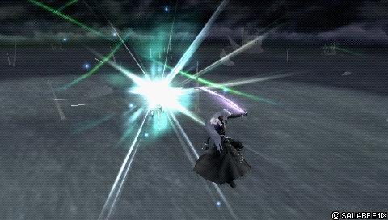
Identique au sol, mais son existence aérienne en fait un pilier de la défense de Sephiroth : command block frame 1, il stoppe net de nombreuses tentatives de dodge punish, Free Air Dash en tête. Avec Evasion Boost qui double l'invincibilité des esquives, Sephiroth peut enchaîner esquive et Scintilla sans le moindre trou — dévastateur contre les personnages de mêlée basse priorité. Attention : l'animation va toujours à son terme, même au whiff, et un Scintilla évité laisse Sephiroth grand ouvert.
| Dégâts de base | 4, 1 x 6 (10) |
|---|---|
| Startup | 45F, 1F-42F (block) |
| Type | Physical |
| Priorité | Block Mid, Melee High |
| EX Force | 30 |
| Effets | Wall Rush, Block |
| Cancels | Dodge |
| CP (maîtrisé) | 30 (15) |
Heaven's Light Melee High
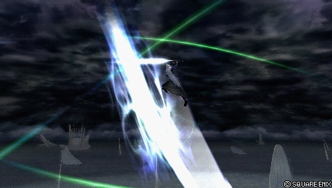
HP évasif à un coup (43F) au bon knockback pour les Wall Rush au plafond : Sephiroth se place sous l'adversaire puis fuse vers le haut. Excellent en punish, en finisher de combo d'assist, en protection post-esquive aérienne et en callout de whiff ; le plongeon initial esquive beaucoup d'attaques sans être de l'invincibilité. Fiable après un stagger de LV2 Assist Change pour sécuriser des dégâts HP, difficile à punir grâce à sa longue distance parcourue et sa recovery courte pour un HP — un coup incontournable, précieux aussi pour la depletion de jauges via Wall Rush.
| Startup | 43F |
|---|---|
| Priorité | Melee High |
| EX Force | 0 |
| Effets | Wall Rush |
| Cancels | Dodge |
| CP (maîtrisé) | 30 (15) |
EX Mode: Reunion! & EX Burst
L'EX Mode « Reunion! » confère Regen, Critical Boost, Glide (vol libre en maintenant croix en l'air) et Heartless Angel. Les dégâts de bravery de Sephiroth étant déjà bons, il profite naturellement des coups critiques ; avec jauges assist et EX pleines, un seul combo d'assist suivi d'une activation d'EX Mode crée un momentum énorme.
Heartless Angel (R + carré) : Sephiroth charge une attaque imblocable qui réduit la bravery adverse à 1 (sans pouvoir gagner de bravery pendant la charge). Temps de charge de 5 secondes (297 frames), cooldown d'environ 0,6 seconde en cas de relâchement anticipé. Les assists peuvent enchaîner derrière, ce qui garantit généralement un bravery break ; les assists qui maintiennent longtemps l'adversaire (Jecht, Kuja) contournent la longue charge. Même sans le temps de charger complètement, l'amorcer pousse l'adversaire à approcher. Si la bravery adverse est déjà à 1, elle n'est pas réduite davantage.
EX Burst : L'EX Burst Super Nova se remplit en martelant cercle : exécution simple et l'un des bursts les plus puissants du jeu (100 de dégâts de base au total).
Mécanique unique
Plan de jeu & techniques avancées
Le neutral de Sephiroth commence par Shadow Flare : harceler à distance, remplir la jauge assist et convertir en combo quand c'est possible — sans en attendre des dégâts directs. La menace du projectile force l'adversaire à approcher, et c'est là que le reste de l'arsenal prend le relais : Sudden Cruelty punit les esquives aériennes et les attaques imprudentes de près, Godspeed et Fervent Blow whiff punissent à mi-distance, Oblivion couvre la verticale.
Ses combos solo tournent autour de Shadow Flare : dodge cancel en Sudden Cruelty (43~52 de dégâts de base, 87 EX), cancel en Oblivion pour moins de risque, ou cancel direct en Heaven's Light — le plus régulier, qui fonctionne même au-dessus de l'adversaire grâce au déplacement automatique du coup. En EX Revenge, la routine de référence est cinq Shadow Flares enchaînés puis Heaven's Light, réalisable partout.
Avec assist (Kuja), les départs classiques sont la première partie de Sudden Cruelty, Reaper arrêté à deux coups, le Wall Rush au sol d'Oblivion ou un Wall Rush d'Octaslash ; Heaven's Light sert de finisher fiable à faible exécution, Sudden Cruelty ou Hell's Gate de finishers orientés EX, Octaslash de finisher de dégâts qui laisse le temps à la bravery de base de récupérer.
Défensivement, la force de Sephiroth est sa flexibilité post-esquive : Scintilla (frame 1) contre les dashes et les braveries basse priorité, Heaven's Light et Hell's Gate comme sorties évasives verticales — sans oublier que Heaven's Light garantit des dégâts HP après un stagger de LV2 Assist Change. Chaque option a un contre, donc variez : c'est le prix de sa mobilité médiocre et de ses recoveries longues.
Attention aux pièges du personnage : les builds Bravery Boost on Dodge punissent l'abus de Shadow Flare, et le style très actif de Sephiroth peut faire retomber le joueur dans ses habitudes. Contrôlez le rythme, n'engagez que quand le zoning a préparé le terrain.
Techniques spécifiques
Hell's Gate Infinite (Phantom Train)
Un Hell's Gate maintenu devient un combo infini dans Phantom Train : Sephiroth se dirige vers l'une des fenêtres du wagon tout en frappant l'adversaire pendant le piqué multi-coups.
Shadow Flare cross-cancel
Le Shadow Flare au sol peut être cancel en Shadow Flare aérien, alors que la version aérienne ne peut pas se cancel en elle-même. Détail mineur, mais utile aux builds Pre-Jump qui veulent quitter le sol sans désactiver le booster.
Blodge après Shadow Flare
Pendant la recovery de Shadow Flare, Sephiroth peut blodge pour stagger un adversaire qui dashe sur lui, puis convertir : Heaven's Light si l'esquive ne l'a pas trop éloigné (dégâts HP et depletion garantis), braveries ou assist sinon. Recommandé aux niveaux intermédiaire et avancé plutôt qu'aux débutants.
Oblivion lock-off movement
Sans lock-on et avec Oblivion assigné à cercle, Sephiroth peut l'utiliser pour se déplacer dans n'importe quelle direction à laquelle il fait face — un moyen de remplir la jauge assist plus sûrement.
Godspeed landing lag combo
Si les projectiles de Godspeed touchent un adversaire au sol à distance, un dodge cancel en Sudden Cruelty peut combotter sur le landing lag. Le timing du dodge cancel est nettement plus tardif sur touche, ce qui demande de l'entraînement.
Hell's Gate input hold
Pour garantir qu'un Hell's Gate ne s'arrête pas prématurément en appelant un assist BRV : maintenir carré, puis maintenir aussi cercle et presser L. L'input est inconfortable (pouce + index gauche) mais fiabilise le setup, notamment sur un clash avec un One Inch Punch chargé.
Combos documentés (notation d'origine, dissidia.wiki)
Main article: Sephiroth (Combos)
Sephiroth has a plethora of solo combos, most of which revolve around Shadow Flare. He works well with assists both in close-range and in midrange, and he even has an infinite in Phantom Train. [1]
Main article: Sephiroth Combos (Kuja Assist)
Techniques universelles (blodge, dash feint, lock off, dodge punishment) : voir la page Techniques & glitches.
Matchups
Un seul matchup est documenté en détail : Prishe (égal). Les deux personnages se disputent la position et la jauge EX ; Sephiroth veut harceler au Shadow Flare avant de s'approcher, Prishe veut venir au contact. Les gros échanges se jouent au corps à corps, où chaque action a un contre — aucun outil de Sephiroth n'est sans risque, il faut varier. Le matchup demande une bonne compréhension du positionnement, de la gestion des jauges et des timings, mais Sephiroth a les outils pour s'en sortir (build recommandé : EX ou dégâts).
En neutral : remplir la jauge assist au Shadow Flare puis convertir en combos d'assist (finis en Sudden Cruelty pour l'EX ou Heaven's Light pour les HP). Godspeed est exceptionnel ici, alors qu'il est peu utilisé ailleurs : sa rafale interrompt le One Inch Punch chargé, pendant la charge ou au relâchement, à condition d'être à la même hauteur que Prishe. Esquiver au-dessus d'elle exploite le tracking vertical médiocre de ses coups. Sudden Cruelty attrape les esquives aériennes qui la laissent proche, punit les HP anticipés et stoppe ses rushes — mais attention à ne pas whiff punir un OIP chargé avec, sous peine de stagger.
En défense : Scintilla établit que Prishe ne peut pas dasher et frapper gratuitement (Free Air Dash, Raging Fists, OIP non chargé), idéalement après une esquive — mais il ne protège ni du OIP chargé ni de Banishga. Contre Banishga : neutral dodge au moment de l'impact puis whiff punish (Sudden Cruelty, Reaper ou assist), ou esquives verticales. Les Assist Changes sont centraux : LV1 Change > Heaven's Light contre Auroral Uppercut, LV1 Change dès le départ de Banishga > Free Air Dash > Sudden Cruelty, LV2 Change > Heaven's Light contre OIP, Dragon Kick ou Auroral Uppercut. Sous Assist Lock, ralentir le rythme et se déplacer (Quickmoves, Multi Air Slide, sauts).
En offense : Sephiroth attaque rarement — les HP fonctionnent contre le block en mixup après un dash (conditionner d'abord avec des braveries), Sudden Cruelty attrape le startup du Free Air Dash, Hell's Gate à l'atterrissage bat les esquives au sol, et l'EX Revenge « checkmate » autorise des Free Air Dash constants avec réaction en EX Revenge sur touche. Gare au block > Nullifying Dropkick au sol. Côté builds : EX avec Cleaver/White Gem et Aerith (plus d'EX et d'ATK mais dépendant des setups de Chase), ou EX avec Heaven's Cloud et d'autres assists (EX plus facile hors Chase avec Tenacious Attacker, whiff punish possible, moins de dégâts).
Vidéos de matchs : Replay Theater — matchs de Sephiroth.
Builds
Sephiroth fonctionne avec de nombreux builds, les dégâts de bravery et l'EX étant son pain quotidien ; ses builds offrent une grande marge d'optimisation. Le build documenté est un hybride « Seal of Lufenia » avec Equip Glitch (le coût CP total suppose le glitch réalisé) : One-Winged Angel en arme, pièces Lufenian (Dirk, Hairpin, Vest), assist Kuja, invocation Rubicante et une batterie d'accessoires boosters (Hyper Ring, Muscle Belt, Sniper Eye, Battle Hammer, conditions Summon Unused / Pre-EX Mode / Aerial / Opponent Summon Unused, Tenacious Attacker, Glutton) pour un multiplicateur maximal de x3,5 — 1175 BRV, 180 ATK, 182 DEF. L'extra ability Best Dresser est à équiper.
La page matchups apporte un éclairage complémentaire sur les arbitrages EX : un build EX avec Cleaver, White Gem et l'assist Aerith maximise le gain d'EX et l'ATK mais dépend des setups de Chase d'Aerith ; un build EX avec Heaven's Cloud et d'autres assists facilite l'EX sur Sudden Cruelty sans Chase (Tenacious Attacker recommandé) et permet le whiff punish des HP avec assist, au prix de dégâts de bravery moindres.
| Stats | |
|---|---|
| HP | 9644 |
| CP | 450 |
| BRV | 1175 |
| ATK | 180 |
| DEF | 182 |
| LUK | 60 |
| Max Booster | x3.5 |
| Equipment | |
|---|---|
| Assist | Kuja |
| Weapon | One-Winged Angel |
| Hand | Lufenian Dirk |
| Head | Lufenian Hairpin |
| Body | Lufenian Vest |
| Accessory 1 | Hyper Ring |
| Accessory 2 | Muscle Belt |
| Accessory 3 | Sniper Eye |
| Accessory 4 | Battle Hammer |
| Accessory 5 | Summon Unused |
| Accessory 6 | Pre-EX Mode |
| Accessory 7 | Aerial |
| Accessory 8 | Opponent Summon Unused |
| Accessory 9 | Tenacious Attacker |
| Accessory 10 | Glutton |
| Summon | Rubicante |
| Bravery attacks | |
|---|---|
| Ground | Aerial |
| HP attacks | |
| Ground | Aerial |
| Stats |
|---|
| Equipment |
|---|
| Bravery attacks | |
|---|---|
| Ground | Aerial |
| HP attacks | |
| Ground | Aerial |
Un second build est prévu dans les données mais entièrement vide (aucune statistique ni équipement), et les sélections d'attaques des builds ne sont pas renseignées dans les tables.
Synergies d'assist
Sephiroth en tant qu'assist
Sephiroth figure en tier High de la tier list assist. Ses attaques d'assist : Reaper (BRV sol, 21F, 45 de dégâts de base, Chase), Sudden Cruelty (BRV air, 17F, 40 de dégâts, Chase), Octaslash (HP sol, 43F, Wall Rush) et Hell's Gate (HP air, 55F, Chase). Chez Cloud, il est décrit comme un Kuja « économique » avec un meilleur whiff punish ; l'assist Hell's Gate dépanne dans les scrambles malgré un coût parfois difficile à justifier.
Assists recommandées
- Kuja — Cité avec Aerith comme pilier de la synergie d'assist qui rend les combos de Sephiroth complets ; c'est l'assist du build documenté et de toutes les routes de combo détaillées (Sudden Cruelty, Reaper, Oblivion, Octaslash, Heaven's Light en départ).
- Aerith — Second pilier de la synergie d'assist selon l'overview ; elle étend notamment les conversions de Hell's Gate et alimente le build EX à base de Chase décrit dans le matchup Prishe.
- Tidus / Yuna — Mentionnés dans le matchup Prishe comme conversions plus régulières que Kuja après les projectiles de Godspeed (Tidus BRV sol > Shadow Flare > Heaven's Light ; Yuna BRV sol avec mur), au prix de routes moins destructrices — acceptable vu la faible défense de base de Prishe.
Tech communautaire
Hell's Gate Infinite Combo (Phantom Train)
Combo infini documenté : Hell's Gate maintenu contre l'une des fenêtres de Phantom Train, en frappant l'adversaire pendant le déplacement.
Dissidia 012 Duodecim Final Fantasy Sephiroth Combo Montage — Andyz5448 2011
Montage d'époque recensant une liste de combos et d'enchaînements de Sephiroth, exécutés contre des adversaires niveau 105 avec Auto Recovery pour valider les suites réelles.
Dissidia 012 Sephiroth Exmode assist combo — JackofDemons 2011
Courte démo d'un setup d'EX Mode : activation pendant le slam pour purger l'assist adverse, appel d'assist puis Heartless Angel, et nouvelle conversion derrière.
Sources
- https://dissidia.wiki/Sephiroth_(Dissidia_012)
- https://dissidia.wiki/Sephiroth_(Dissidia_012)/Matchups
- https://www.youtube.com/watch?v=doDji0EBSjI&t=72
- https://www.youtube.com/watch?v=CXOvWtR-S38
- https://www.youtube.com/watch?v=eSCTYJF2NLA
- https://dissidia.wiki/Tier_List_(Dissidia_012)
- https://dissidia.wiki/Tier_List_(Assist)
Limites connues
- Aucune mécanique unique n'est documentée pour Sephiroth (section absente du wiki).
- Un seul matchup est détaillé (Prishe) ; le reste du cast n'est pas couvert.
- La section synergies d'assist se limite à une phrase (« fonctionne avec la plupart des assists viables en tournoi ») : les recommandations ci-dessus sont reconstituées depuis l'overview et le matchup Prishe.
- Le second build est entièrement vide et les sélections d'attaques des builds ne sont pas renseignées.
- Les valeurs de gain de jauge assist (assistGain) sont vides pour tous les coups, et les dégâts de Heaven's Light ne sont pas chiffrés (« - »).
- L'unique référence du wiki est une URL sans titre, auteur ni date.